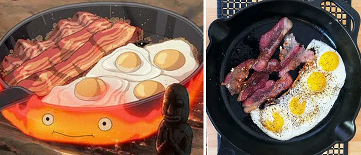

Howl's Moving Castle Bacon and Egg Breakfast

Arguably one of the most recognizable Ghibli dihes is Howl's scrumptious breakfast, doused in a generous amount of grease and seasoning. When the dramatic wizard isn't busy managing his magical castle or traveling through different dimensions, he takes the time to serve his best friends an easy (but wholly satisfying) breakfast
Ingredients
- 3 strips of bacon
- 4 large eggs
- salt and pepper
Directions
- In a large skillet over medium heat, cook strips of bacon on one half of the skillet until some fat is rendered and coats the bottom of the pan (about 3 minutes).
- Once the fat has rendered, crack four eggs into the other half of the skillet.
- Season the eggs with salt and pepper.
- Cook the bacon to your desired level of crispness and the eggs to your desired level of doneness.
- Save and leftover eggshells for your fire demon friend to consume.
Tip: Serve with a hearty slice of sourdough bread and soft cheese of your choice. I recommend a double-cream
brie